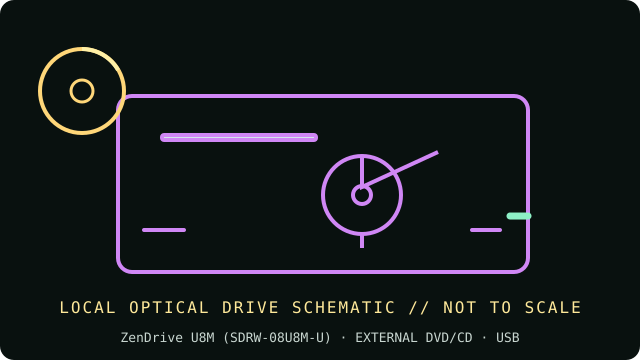

[ INDIVIDUAL COMPONENT // OPTICAL DRIVES ]
ASUS ZenDrive U8M SDRW-08U8M-U
Ultra-slim external ZenDrive model with USB Type-C connectivity and M-DISC DVD+R support. It is distinct from the ZenDrive U7M/U9M records and has its own media and connector profile.

IDENTIFICATION: ASUS SDRW-08U8M-U · Match the complete label, service code and manual revision before relying on a feature or installing firmware.
Verified specifications
| Catalog subcategory | External DVD writers |
|---|---|
| Exact product identifier | ASUS ZenDrive U8M (SDRW-08U8M-U) |
| Supported DVD/CD formats | Reads DVD-ROM, DVD±R/RW, DVD±R DL, CD-ROM/R/RW and M-DISC DVD+R SL. Writes DVD±R, DVD±R DL, DVD±RW, CD-R/RW and single-layer M-DISC DVD+R. DVD-RAM is not listed in the model specification. |
| DVD read/write speeds | DVD±R write up to 8×; DVD±R DL up to 6×; DVD-RW up to 6×; DVD+RW up to 8×; M-DISC DVD+R SL up to 4×. DVD-ROM/recordable DVD read up to 8×. |
| CD read/write speeds | CD-R/RW write up to 24×; CD-ROM/R/RW read up to 24×. |
| USB interface and power | External USB Type-C connection (USB 2.0 optical link), powered by the host at 5 V; no separate AC adapter normally required. Use an appropriate USB-C cable/adapter and a host port able to provide stable power. |
| Compatibility, software and caveats | ASUS lists Windows 8/8.1/10/11 and macOS versions for this model, but bundled backup/burning tools may be Windows-only or obsolete. Confirm the manual’s OS/software notes and obtain compatible third-party DVD playback or authoring software if needed. |
Use and preservation notes
- Close the tray and keep the drive level during operation; do not disconnect or remove a disc during an active write.
- Use known-good media and a conservative supported speed for archival copies. Finalize as appropriate and read back the disc; retain a checksum and log drive model, firmware, software, media ID and errors.
- Store optical media in protective cases away from heat, direct light, humidity, scratches and adhesive labels. Keep more than one verified copy.
Manufacturer and manual sources
- ASUS — ZenDrive U8M product referenceASUS product family page for the exact SDRW-08U8M-U model.
- ASUS — SDRW-08U8M-U official manualsASUS model-specific quick-start/manual downloads.
Advertised maxima are media-dependent drive ratings, not guarantees of a successful burn or recovery from damaged/aged media. Exact host and software support can change by region and operating-system release.